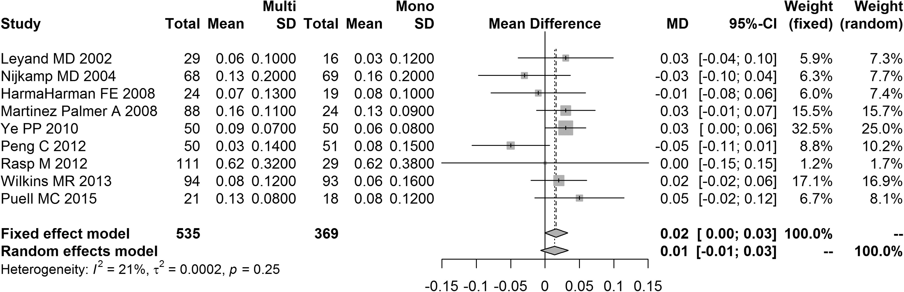
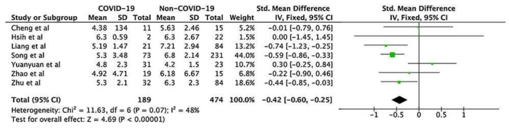
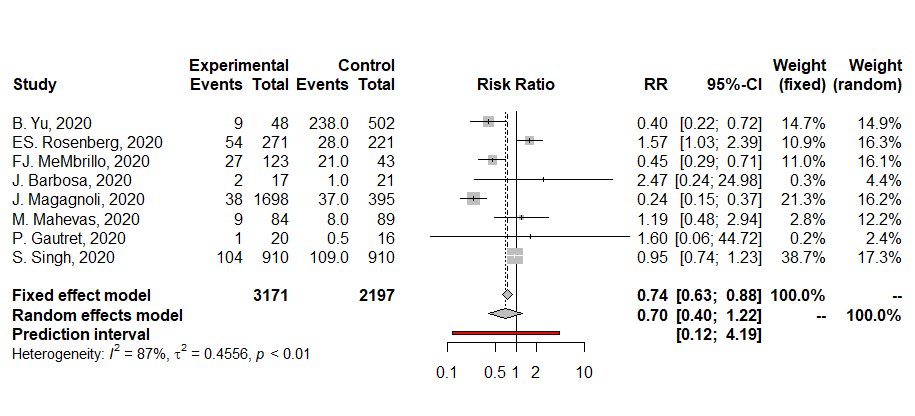
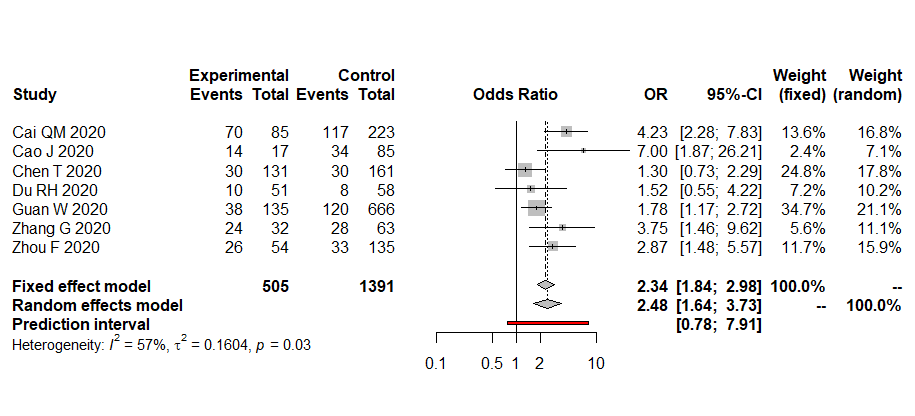
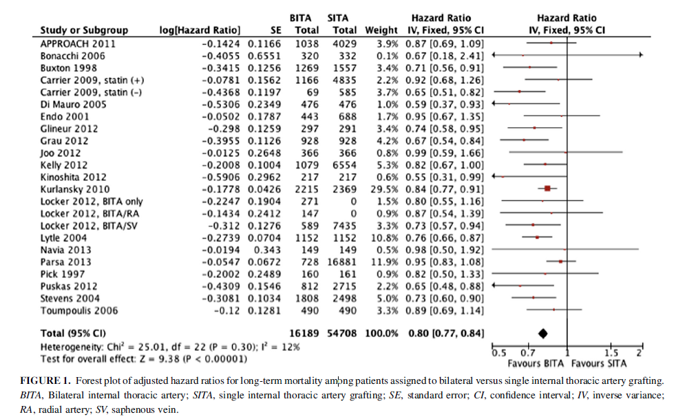
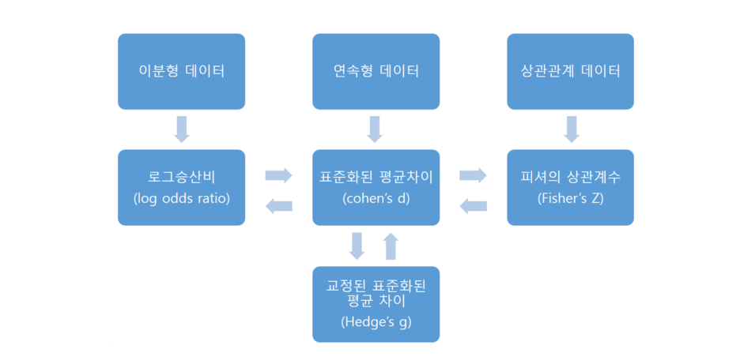

Chapter 2 효과크기 계산
2.1 연속형 자료의 효과크기 계산
2.1.1 평균차(mean difference; MD)
일반적으로 두 집단 간 비교연구에서 보고되는 주요 통계량은 다음과 같다.
- 평균, 표준편차, 표본크기(mean, SD, sample size)
- 검정통계량( \(t\)-value, \(F\)-value 등)
- 유의확률 (예:\(p=0.013\) 등)
- 구간화 유의확률 (예: \(p<0.05\) 등)
보통 연구 결과에는 두 집단의 평균, 표준편차, 표본크기가 제시되며, 메타분석에서 가장 일반적으로 선호되는 형태이다.
표준화되지 않은 평균차(raw mean difference)는 의미있는 결과 측정(예: 혈압)과 모든 연구에서 동일한 척도(measure)를 사용한 경우 적용가능하다. 모집단에서 평균차이 \(\Delta\)는 다음과 같이 정의된다.
\[ \Delta = \mu_1 - \mu_2 \] 이때, 모집단의 평균차 \(\Delta\)는 독립적인 두 집단(treatment and control)의 표본평균 \(\bar{X}_1\)과 \(\bar{X}_2\)로부터 추정되고 다음과 같이 \(D\)로 정의할 수 있다.
\[ D = \bar{X}_1 - \bar{X}_2 \] 만약, 두 모집단의 분산이 동일하다고 가정하면, \(\sigma_1 = \sigma_2 = \sigma\), \(i\)번째 연구에서의 평균차 \(D_1\)의 분산은 다음과 같다.
\[ Var(D_i )=\frac{n_1 + n_2}{n_1 n_2}S_p^2 \] 여기서 \(n_1\)은 첫번째 집단의 표본크기, \(n_2\)는 두번째 집단의 표본크기, 합동분산추정량(pooled variance estimator) \(S_p^2\)은 \[ S_p^2 = \frac{(n_1-1)S_1^2 + (n_2-1)S_2^2}{n_1 +n_2 -2} \] 이고, \(S_1^2\)과 \(S_2^2\)은 각 집단의 표본분산을 의미한다.
만약, 두 모집단의 분산이 다르다고 가정하면, \(\sigma_1 \ne \sigma_2\), \(i\)번째 연구에서의 평균차 \(S_i\)의 분산은 다음과 같다. \[ Var(D_i) = \frac{S_1^2}{n_1}+\frac{S_2^2}{n_2} \]
두 경우 모두 표준오차(standard error) \(S_p\)는 다음과 같다. \[ SE(D_i ) = \sqrt{Var(D_i)} \] \(i\)번째 연구에서 효과크기의 신뢰구간은 다음과 같다. \[ CI = D_i \pm z_{\alpha/2} \times SE(D_i ) \] \(i\)번째 연구의 가중값은 분산의 역수(inverse variance)로 정의하고 다음과 같다. \[ w_i = \frac{1}{Var(D_i)} \]
평균효과크기 \(M\)은 가중값을 이용한 가중평균으로 나타내며, 그 정의는 다음과 같다. \[ M = \frac{\sum_{i=1}^K w_iD_i}{\sum_{i=1}^K w_i} \] 평균효과크기 \(M\)의 분산과 표준오차는 다음과 같다. \[ Var(M)=\frac{1}{\sum_{i=1}^K w_i}, \quad SE(M)=\sqrt{Var(M)} \]
따라서 평균효과크기의 신뢰구간은 다음과 같다. \[ CI=M\pm z_{\alpha/2}\times SE(M) \]
2.1.2 Example
- Multifocal versus monofocal intraocular lenses for age-related cataract patients: a system review and meta-analysis based on randomized controlled trials (Cao et al., 2019)

2.1.2.1 데이터 입력
두 집단간 비교연구에서 필요한 값은 각 집단의 표본크기(n1, n2), 평균(m1, m2), 표준편차(s1, s2) 값이다. 여기서는 10개의 개별 연구의 값을 입력한다.
cdata <- read.table(text='
study n1 m1 s1 n2 m2 s2
Leyand(2002) 29 0.06 0.1 16 0.03 0.12
NijKamp(2004) 68 0.13 0.2 69 0.16 0.2
Harman(2008) 24 0.07 0.13 19 0.08 0.1
Martinez(2008) 88 0.16 0.11 24 0.13 0.09
Ye(2010) 50 0.09 0.07 50 0.06 0.08
Peng(2012) 50 0.03 0.14 51 0.08 0.15
Rasp(2012) 111 0.62 0.32 29 0.62 0.38
Wilkins(2013) 94 0.08 0.12 93 0.06 0.16
Puell(2015) 21 0.13 0.08 18 0.08 0.12
', header=T)
cdata## study n1 m1 s1 n2 m2 s2
## 1 Leyand(2002) 29 0.06 0.10 16 0.03 0.12
## 2 NijKamp(2004) 68 0.13 0.20 69 0.16 0.20
## 3 Harman(2008) 24 0.07 0.13 19 0.08 0.10
## 4 Martinez(2008) 88 0.16 0.11 24 0.13 0.09
## 5 Ye(2010) 50 0.09 0.07 50 0.06 0.08
## 6 Peng(2012) 50 0.03 0.14 51 0.08 0.15
## 7 Rasp(2012) 111 0.62 0.32 29 0.62 0.38
## 8 Wilkins(2013) 94 0.08 0.12 93 0.06 0.16
## 9 Puell(2015) 21 0.13 0.08 18 0.08 0.122.1.2.2 Mean difference
attach(cdata)
# 효과크기: 평균차
D <- m1 - m2
cbind(cdata,D)## study n1 m1 s1 n2 m2 s2 D
## 1 Leyand(2002) 29 0.06 0.10 16 0.03 0.12 0.03
## 2 NijKamp(2004) 68 0.13 0.20 69 0.16 0.20 -0.03
## 3 Harman(2008) 24 0.07 0.13 19 0.08 0.10 -0.01
## 4 Martinez(2008) 88 0.16 0.11 24 0.13 0.09 0.03
## 5 Ye(2010) 50 0.09 0.07 50 0.06 0.08 0.03
## 6 Peng(2012) 50 0.03 0.14 51 0.08 0.15 -0.05
## 7 Rasp(2012) 111 0.62 0.32 29 0.62 0.38 0.00
## 8 Wilkins(2013) 94 0.08 0.12 93 0.06 0.16 0.02
## 9 Puell(2015) 21 0.13 0.08 18 0.08 0.12 0.052.1.2.3 D의 분산과 표준오차
### 합동분산추정량
sp2 <- ((n1-1)*s1^2 + (n2-1)*s2^2)/(n1+n2-2)
### D의 분산 (등분산)
varD <- (n1+n2)/(n1*n2)*sp2
### D의 분산 (이분산)
varD <- s1^2/n1 + s2^2/n2
### D의 표준오차
seD <- sqrt(varD)
cbind(cdata,D,varD)## study n1 m1 s1 n2 m2 s2 D varD
## 1 Leyand(2002) 29 0.06 0.10 16 0.03 0.12 0.03 0.0012448276
## 2 NijKamp(2004) 68 0.13 0.20 69 0.16 0.20 -0.03 0.0011679454
## 3 Harman(2008) 24 0.07 0.13 19 0.08 0.10 -0.01 0.0012304825
## 4 Martinez(2008) 88 0.16 0.11 24 0.13 0.09 0.03 0.0004750000
## 5 Ye(2010) 50 0.09 0.07 50 0.06 0.08 0.03 0.0002260000
## 6 Peng(2012) 50 0.03 0.14 51 0.08 0.15 -0.05 0.0008331765
## 7 Rasp(2012) 111 0.62 0.32 29 0.62 0.38 0.00 0.0059018329
## 8 Wilkins(2013) 94 0.08 0.12 93 0.06 0.16 0.02 0.0004284603
## 9 Puell(2015) 21 0.13 0.08 18 0.08 0.12 0.05 0.00110476192.1.2.4 신뢰구간
### 신뢰 하한
lb <- D - qnorm(0.975)*seD
### 신뢰 상한
ub <- D + qnorm(0.975)*seD
data.frame(study=cdata[,1],D,varD,lb,ub)## study D varD lb ub
## 1 Leyand(2002) 0.03 0.0012448276 -0.0391516732 0.099151673
## 2 NijKamp(2004) -0.03 0.0011679454 -0.0969821940 0.036982194
## 3 Harman(2008) -0.01 0.0012304825 -0.0787520740 0.058752074
## 4 Martinez(2008) 0.03 0.0004750000 -0.0127164247 0.072716425
## 5 Ye(2010) 0.03 0.0002260000 0.0005352805 0.059464719
## 6 Peng(2012) -0.05 0.0008331765 -0.1065739613 0.006573961
## 7 Rasp(2012) 0.00 0.0059018329 -0.1505710727 0.150571073
## 8 Wilkins(2013) 0.02 0.0004284603 -0.0205698487 0.060569849
## 9 Puell(2015) 0.05 0.0011047619 -0.0151452022 0.1151452022.1.2.5 가중값
### 가중값
W <- 1/varD
### 가중값 표준화
Wp <- W/sum(W)*100
data.frame(study=cdata[,1],D,varD,lb,ub,Wp)## study D varD lb ub Wp
## 1 Leyand(2002) 0.03 0.0012448276 -0.0391516732 0.099151673 5.902006
## 2 NijKamp(2004) -0.03 0.0011679454 -0.0969821940 0.036982194 6.290516
## 3 Harman(2008) -0.01 0.0012304825 -0.0787520740 0.058752074 5.970812
## 4 Martinez(2008) 0.03 0.0004750000 -0.0127164247 0.072716425 15.467325
## 5 Ye(2010) 0.03 0.0002260000 0.0005352805 0.059464719 32.508759
## 6 Peng(2012) -0.05 0.0008331765 -0.1065739613 0.006573961 8.818035
## 7 Rasp(2012) 0.00 0.0059018329 -0.1505710727 0.150571073 1.244864
## 8 Wilkins(2013) 0.02 0.0004284603 -0.0205698487 0.060569849 17.147398
## 9 Puell(2015) 0.05 0.0011047619 -0.0151452022 0.115145202 6.6502832.1.2.6 평균효과크기와 분산, 신뢰구간
### 평균효과크기
M <- sum(W*D)/sum(W)
### 평균효과크기의 분산
varM <- 1/sum(W)
### 평균효과크기의 표준오차
seM <- sqrt(varM)
### 평균효과크기의 신뢰구간
lb <- M - qnorm(0.975)*seM
ub <- M + qnorm(0.975)*seM
data.frame(M, varM, seM, lb, ub)## M varM seM lb ub
## 1 0.01602479 7.34698e-05 0.008571452 -0.0007749432 0.03282453detach(cdata)2.1.3 표준화 평균차
표준화 평균차(standardized mean difference; SMD)는 Cohen’s \(d\)로 불리며, \(i\)번째 연구에서의 표준화 평균차 \(d_i\)는 다음과 같이 정의한다.
\[ d_i = \frac{\bar{X_1}-\bar{X_2}}{S_p} \]
여기서 \(S_p\)는 합동표준편차 추정량(pooled standard deviation estimator)을 의미하며, \(S_p\)는 다음과 같다.
\[ S_p = \sqrt{\frac{(n_1 -1)S_1^2 + (n_2-1)S_2^2}{n_1+n_2-2}} \]
여기서 \(S_1^2\)과 \(S_2^2\)은 각 집단의 표본분산을 의미한다.
만약 \(t\) 또는 \(F\)값이 제시된 경우 \(d_i\)의 정의는 다음과 같다.
- 검정통계량 \(t\) 값이 주어진 경우:
\[ d_i = t_i\sqrt{\frac{n_1+n_2}{n_1n_2}} \]
- 검정통계량 \(F\) 값이 주어진 경우:
\[ d_i = \sqrt{\frac{F_i (n_1+n_2)}{n_1n_2}} \]
개별 연구의 표준화 평균차 \(d_i\)의 분산은 다음과 같이 정의한다.
\[ Var(d_i)=\frac{1}{n_1}+\frac{1}{n_2}+\frac{d_i^2}{2(n_1+n_2)}=\frac{n_1+n_2}{n_1n_2}+\frac{d_i^2}{2(n_1+n_2)} \]
2.1.3.1 보정된(adjusted) 표준화 평균차
Cohen’s d는 표본크기가 작은 경우(\(n \le 20\)) 효과크기를 과대 추정하는 경향이 있다. 이를 보정(adjust)하기 위해 Hedges’g는 다음과 같이 정의한다.
\[ g_i = J \times d, \,\,\, J=1-\frac{3}{4(n_1+n_2)-9} \] Hedges’ g의 분산은 다음과 같다.
\[ Var(g_i)=J^2\times Var(d_i) \]
2.1.3.2 효과크기의 표준오차와 신뢰구간
각 연구의 효과크기와 신뢰구간은 다음과 같다.
Cohen’s d의 경우: \[ CI(d_i)=d_i \pm z_{\alpha/2}\times SE(d_i), \quad SE(d_i)=\sqrt{Var(d_i)} \]
Hedges’ g의 경우: \[ CI(g_i)=g_i \pm z_{\alpha/2}\times SE(g_i), \quad SE(g_i)=\sqrt{Var(g_i)} \]
2.1.3.3 가중값과 평균효과크기
각 연구는 특성이 다르기 때문에 평균효과크기를 계산할 때 각 연구의 특성이 반영되어야 한다. 메타분석에서는 표본의 크기와 관련된 특성을 이용하며, 주로 표본 크기에 비례하는 가중값(weight)을 부과하여 가중평균의 형태로 평균효과크기(mean effect size)를 산출한다.
일반적으로 가장 많이 쓰이는 가중값의 형태는 분산의 역수로, 표본이 클수록 가중값이 커지게 된다.
\[ W_i = \frac{1}{Var_i} \]
평균효과크기는 아래 정의와 같이 가중값을 곱한 효과크기의 합, 즉 가중효과크기의 합을 가중값의 합으로 나눈 가중평균의 형태이며, 그 정의는 다음과 같다.
- Cohen’s d의 경우:
\[ M_d = \frac{\sum_{i=1}^K w_id_i}{\sum_{i=1}^K w_i} \]
- Hedges’ g의 경우:
\[ M_g = \frac{\sum_{i=1}^K w_ig_i}{\sum_{i=1}^K w_i} \]
2.1.3.4 평균효과크기와 그 표준오차(standard error of the mean)
평균효과크기의 표준오차, 신뢰구간, 그리고 유의성 검증을 위한 통계량은 다음과 같다.
평균효과크기: \[M = \frac{\sum_{i=1}^K w_ig_i}{\sum_{i=1}^K w_i}\]
분산과 표준오차: \[V_M = \frac{1}{\sum_{i=1}^K w_i}, \quad SE(M)=\sqrt{V_M}\]
검정 통계량(Test statistic) under \(H_0: M=0\) \[Z=\frac{M}{SE(M)}\]
신뢰구간: \[CI=(M-z_{\alpha/2}\times SE(M), M+z_{\alpha/2}\times SE(M))\]
2.1.3.5 \(t\)값, \(F\)값 및 유의확률(\(p-value\))이 제시된 경우
\(t\)값: \[d=\pm t\sqrt{\frac{n_1+n_2}{n_1n_2}}\]
\(F\)값: \[d=\sqrt{\frac{F(n_1+n_2)}{n_1n_2}}\]
\(p-value\)가 제시된 경우: \[d=\pm t_{p-value}\sqrt{\frac{n_1+n_2}{n_1n_2}}\]
\(p<\alpha\)로 제시된 경우: \[d=\pm t_{\alpha}\sqrt{\frac{n_1+n_2}{n_1n_2}}\]
2.1.4 Example
- Crucial laboratory parameters in COVID-19 diagnosis and prognosis: An updated meta-analysis (Soraya and Ulhaq, 2019)

2.1.4.1 데이터 입력:
두 집단간 비교연구에서 필요한 값은 각 집단의 표본크기(n1, n2), 평균(m1, m2), 표준편차(s1, s2) 값이다. 여기서는 10개의 개별 연구의 값을 입력한다.
cdata2 <- read.table(text='
study m1 s1 n1 m2 s2 n2
"Cheng et al" 4.38 134 11 5.63 2.46 15
"Hsih et al" 6.3 0.59 2 6.3 2.67 22
"Liang et al" 5.19 1.47 21 7.21 2.94 84
"Song et al" 5.3 3.48 73 6.8 2.14 231
"Yuanyuan et al" 4.8 2.3 31 4.2 1.5 23
"Zhao et al" 4.92 4.71 19 6.18 6.67 15
"Zhu et al" 5.3 2.1 32 6.3 2.3 84
', header=T)
cdata2## study m1 s1 n1 m2 s2 n2
## 1 Cheng et al 4.38 134.00 11 5.63 2.46 15
## 2 Hsih et al 6.30 0.59 2 6.30 2.67 22
## 3 Liang et al 5.19 1.47 21 7.21 2.94 84
## 4 Song et al 5.30 3.48 73 6.80 2.14 231
## 5 Yuanyuan et al 4.80 2.30 31 4.20 1.50 23
## 6 Zhao et al 4.92 4.71 19 6.18 6.67 15
## 7 Zhu et al 5.30 2.10 32 6.30 2.30 842.1.4.2 Standardized mean difference
attach(cdata2)
### 합동분산추정량
sp2 <- ((n1-1)*s1^2 + (n2-1)*s2^2)/(n1+n2-2)
### 표준오차
sp <- sqrt(sp2)
### 표준화 평균차
d <- (m1 - m2)/sp
cbind(cdata2,sp,d)## study m1 s1 n1 m2 s2 n2 sp d
## 1 Cheng et al 4.38 134.00 11 5.63 2.46 15 86.517032 -0.01444802
## 2 Hsih et al 6.30 0.59 2 6.30 2.67 22 2.611644 0.00000000
## 3 Liang et al 5.19 1.47 21 7.21 2.94 84 2.717503 -0.74332941
## 4 Song et al 5.30 3.48 73 6.80 2.14 231 2.524881 -0.59408748
## 5 Yuanyuan et al 4.80 2.30 31 4.20 1.50 23 2.000961 0.29985587
## 6 Zhao et al 4.92 4.71 19 6.18 6.67 15 5.651765 -0.22293920
## 7 Zhu et al 5.30 2.10 32 6.30 2.30 84 2.247377 -0.444963242.1.4.3 d의 분산, 표준오차 및 신뢰구간
### d의 분산
vard <- 1/n1+1/n2+d^2/(2*(n1+n2))
### D의 표준오차
sed <- sqrt(vard)
### 신뢰 하한
lb <- d - qnorm(0.975)*sed
### 신뢰 상한
ub <- d + qnorm(0.975)*sed
data.frame(study=cdata2[,1],d,vard,lb,ub) ## study d vard lb ub
## 1 Cheng et al -0.01444802 0.15757977 -0.7924816 0.76358553
## 2 Hsih et al 0.00000000 0.54545455 -1.4475293 1.44752933
## 3 Liang et al -0.74332941 0.06215495 -1.2319659 -0.25469287
## 4 Song et al -0.59408748 0.01860813 -0.8614493 -0.32672563
## 5 Yuanyuan et al 0.29985587 0.07656886 -0.2424873 0.84219904
## 6 Zhao et al -0.22293920 0.12002916 -0.9019731 0.45609472
## 7 Zhu et al -0.44496324 0.04400818 -0.8561270 -0.033799532.1.4.4 가중값
### 가중값
W <- 1/vard
### 가중값 표준화
Wp <- W/sum(W)*100
data.frame(study=cdata2[,1],d,vard,W,Wp)## study d vard W Wp
## 1 Cheng et al -0.01444802 0.15757977 6.345992 5.196411
## 2 Hsih et al 0.00000000 0.54545455 1.833333 1.501224
## 3 Liang et al -0.74332941 0.06215495 16.088824 13.174321
## 4 Song et al -0.59408748 0.01860813 53.739958 44.004922
## 5 Yuanyuan et al 0.29985587 0.07656886 13.060140 10.694285
## 6 Zhao et al -0.22293920 0.12002916 8.331309 6.822086
## 7 Zhu et al -0.44496324 0.04400818 22.723050 18.6067512.1.4.5 평균효과크기와 분산, 신뢰구간
### 평균효과크기
Md <- sum(W*d)/sum(W)
### 평균효과크기의 분산
varMd <- 1/sum(W)
### 평균효과크기의 표준오차
seMd <- sqrt(varMd)
### 평균효과크기의 신뢰구간
lb <- Md - qnorm(0.975)*seMd
ub <- Md + qnorm(0.975)*seMd
data.frame(Md, varMd, seMd, lb, ub)## Md varMd seMd lb ub
## 1 -0.426042 0.008188492 0.09049029 -0.6033997 -0.24868432.1.4.6 Corrected standardized mean difference
### 보정된 표준화 평균차 Hedges' g
J <- (1-3/(4*(n1+n2)-9))
g <- d * J
### g의 분산과 표준오차
varg <- J^2*vard; seg <- sqrt(varg)
### 신뢰 하한
lbg <- g - qnorm(0.975)*seg
### 신뢰 상한
ubg <- g + qnorm(0.975)*seg
data.frame(study=cdata2[,1],g,varg,lbg,ubg) ## study g varg lbg ubg
## 1 Cheng et al -0.01399177 0.14778451 -0.7674558 0.73947230
## 2 Hsih et al 0.00000000 0.50848557 -1.3976145 1.39761453
## 3 Liang et al -0.73790365 0.06125089 -1.2229735 -0.25283380
## 4 Song et al -0.59261087 0.01851574 -0.8593082 -0.32591355
## 5 Yuanyuan et al 0.29551014 0.07436555 -0.2389730 0.82999326
## 6 Zhao et al -0.21767292 0.11442546 -0.8806667 0.44532083
## 7 Zhu et al -0.44202942 0.04342976 -0.8504822 -0.033576682.1.4.7 가중값
### 가중값
Wg <- 1/varg
### 가중값 표준화
Wpg <- Wg/sum(Wg)*100
data.frame(study=cdata2[,1],g,varg,Wg,Wpg)## study g varg Wg Wpg
## 1 Cheng et al -0.01399177 0.14778451 6.766609 5.444661
## 2 Hsih et al 0.00000000 0.50848557 1.966624 1.582418
## 3 Liang et al -0.73790365 0.06125089 16.326294 13.136734
## 4 Song et al -0.59261087 0.01851574 54.008098 43.456891
## 5 Yuanyuan et al 0.29551014 0.07436555 13.447086 10.820017
## 6 Zhao et al -0.21767292 0.11442546 8.739314 7.031971
## 7 Zhu et al -0.44202942 0.04342976 23.025684 18.5273082.1.4.8 평균효과크기와 분산, 신뢰구간
### 평균효과크기
Mg <- sum(Wg*g)/sum(Wg)
### 평균효과크기의 분산
varMg <- 1/sum(Wg)
### 평균효과크기의 표준오차
seMg <- sqrt(varMg)
### 평균효과크기의 신뢰구간
lbg <- Mg - qnorm(0.975)*seMg
ubg <- Mg + qnorm(0.975)*seMg
data.frame(Mg, varMg, seMg, lbg, ubg)## Mg varMg seMg lbg ubg
## 1 -0.4204571 0.008046366 0.08970154 -0.5962689 -0.24464532.1.5 두 집단(사전-사후검사) 전후 비교조사
두 집단(사전-사후검사)인 경우, 아래와 같이 연구결과에 보고한다. \(D_T\)를 treatment 집단의 사전-사후에 대한 평균값, \(D_C\)를 control 집단의 사전-사후에 대한 평균값이라 할때 효과크기 \(d\)는 다음과 같이 정의한다.
\[ d_{diff}=\frac{\bar{D_T}-\bar{D_C}}{S_{diff_p}} \] 여기서, \(S_{diff_p}\)는 다음과 같다.
\[ S_{diff_p} = \sqrt{\frac{(n_1 -1)S_{diff_1}^2 + (n_2-1)S_{diff_2}^2}{n_1+n_2-2}} \]
효과크기, 분산 등과 평균효과크기의 표준오차, 신뢰구간, 그리고 유의성 검증을 위한 통계량은 다음과 같다.
*효과크기 \(d_{diff}\)의 분산
\[ Var(d_{diff})=\frac{1}{n_1}+\frac{1}{n_2}+\frac{d_i^2}{2(n_1+n_2)} \]
- 보정된 효과크기
\[ g_i = J \times d_{diff}, \,\,\, J=1-\frac{3}{4(n_1+n_2)-9} \]
- 보정된 효과크기의 분산
\[ Var(g_i)=J^2\times Var(d_i) \]
- 효과크기의 신뢰구간
\[ CI(d_{diff})=d_{diff} \pm z_{\alpha/2}\times SE(d_{diff}), \quad SE(d_{diff})=\sqrt{Var(d_{diff})} \]
- 보정된 효과크기의 신뢰구간
\[ CI(g_i)=g_i \pm z_{\alpha/2}\times SE(g_i), \quad SE(g_i)=\sqrt{Var(g_i)} \]
가중값 \[ W_i = \frac{1}{Var_i} \]
평균효과크기: \[M = \frac{\sum_{i=1}^K w_ig_i}{\sum_{i=1}^K w_i}\]
분산과 표준오차: \[V_M = \frac{1}{\sum_{i=1}^K w_i}, \quad SE(M)=\sqrt{V_M}\]
검정 통계량(Test statistic) under \(H_0: M=0\) \[Z=\frac{M}{SE(M)}\]
신뢰구간: \[CI=(M-z_{\alpha/2}\times SE(M), M+z_{\alpha/2}\times SE(M))\]
2.1.6 단일집단(사전-사후검사)
단일집단(사전-사후검사)인 경우, 두 집단 비교와는 조금 다른 공식을 활용하며, 사전-사후검사의 상관계수가 필요하다. 사후 측정값을 \(X\)로 두고 사전 측정값을 \(Y\), \(r\)은 사전-사후 간의 상관계수, 사전과 사후 측정값의 표준편차를 각각 \(S_1\), \(S_2\)라 할 때 효과크기 \(d_i\)와 그 분산은 다음과 같이 정의한다.
\[ d_i=\frac{\bar{X}-\bar{Y}}{S_p} \]
여기서, \(S_p\)는 다음과 같다.
\[ S_p = \frac{\sqrt{S_1^2+S_2^2-2rS_1S_2}}{\sqrt{2(1-r)}} \]
또한 효과크기 \(d\)의 분산과 표준오차는 다음과 같다.
\[ Var(d_i)=(\frac{1}{n}+\frac{d^2}{2n})\times 2(1-r), \quad SE(d)=\sqrt{Var(d)} \]
보정된 효과크기 \(g\)를 얻기 위한 보정지수(correction factor) \(J\)는 다음과 같다.
\[ J=1-(\frac{3}{4df-1}), \quad df=n-1 \]
- 효과크기의 신뢰구간
\[ CI(d_i)=d_i \pm z_{\alpha/2}\times SE(d_i), \quad SE(d_i)=\sqrt{Var(d_i)} \]
- 보정된 효과크기의 신뢰구간
\[ CI(g_i)=g_i \pm z_{\alpha/2}\times SE(g_i), \quad SE(g_i)=\sqrt{Var(g_i)} \]
이후의 과정(신뢰구간, 가중값, 평균효과크기등의 추정)은 다음과 같다.
가중값 \[ W_i = \frac{1}{Var(d_i)} \]
평균효과크기: \[M = \frac{\sum_{i=1}^K w_ig_i}{\sum_{i=1}^K w_i}\]
분산과 표준오차: \[V_M = \frac{1}{\sum_{i=1}^K w_i}, \quad SE(M)=\sqrt{V_M}\]
검정 통계량(Test statistic) under \(H_0: M=0\) \[Z=\frac{M}{SE(M)}\]
신뢰구간: \[CI=(M-z_{\alpha/2}\times SE(M), M+z_{\alpha/2}\times SE(M))\]
2.2 이분형 자료의 효과크기 계산
이분형(binary) 자료의 경우, 효과크기는 평균차이가 아닌 상대위험률(relative resk, RR) 또는 오즈비(odds ratio, OR)를 주로 이용한다.
2.2.0.1 Effect size of binary data
요인의 결과가 각각 두 개의 범주로 나누어진 분할표(\(2\times 2\) contigency table) 자료의 경우 연관성을 나타내는 측도로 주로 사용되는 것은 상대위험률(RR)과 오즈비(OR)이며, 그 정의는 다음과 같다.
| 집단 | Event | No-Event | Total |
|---|---|---|---|
| 실험 | \(a\) | \(b\) | \(n_1\) |
| 통제 | \(c\) | \(d\) | \(n_2\) |
상대위험률:
\[ RR=\frac{a/(a+b)}{c/(c+d)}=\frac{a/n_1}{c/n_2}=\frac{an_2}{cn_1} \] 오즈비:
\[ OR = \frac{a/b}{c/d}=\frac{ad}{bc} \]
2.2.0.2 상대위험률과 오즈비의 해석
상대위험률과 오즈비의 해석은 다음과 같다. 예를 들어 상대위험률이 \(RR=2.0\)인 경우, 실험집단이 통제집단에 비해 Event가 발생할 확률이 2배 높다는 의미이다. 그리고 만약 \(RR=0.1\)이라면, 실험집단의 이벤트 발생 확률이 통제집단에 비해 \(95\%\) 낮다는 의미이다. 반면, 오즈비의 경우 \(OR=2.0\)이면, Event가 발생하지 않을 경우에 비해 이벤트가 발생할 경우가 통제집단에 비해 실험집단이 두 배가 된다는 의미이다. 즉, 상대위험률처럼 직접적인 확률의 비로 해석하기가 쉽지 않다. 다만 \(OR\)이 1보다 크다면 실험집단의 Event 발생 가능성이 통제집단보다 크다는 것을 알 수 있으며, Event 발생 확률이 매우 낮다면 \(RR\)과 \(OR\)값은 거의 같은 값을 보인다.
2.2.1 상대위험률(Relative Risk; RR)
상대위험률과 오즈비는 그대로 사용하지 않고 자연로그 변환값을 사용한다. 로그변환을 취한 경우에는 수치비교가 용이해지며, 범위가 \(-\infty\)에서 \(\infty\) 값을 취하기 때문에 \(0\)의 경우 효과크기가 없음(neutal value)을 나타낸다. 또한, 로그변환을 통해 정규분포에 가깝게 만들 수 있다.
로그 변환후의 \(RR\)은 다음과 같다. \[ Log(RR_i)=log(\frac{a/(a+b)}{c/(c+d)}) \]
로그 변환후의 분산은 다음과 같다.
\(Log(RR)\)의 분산:
\[ Var(Log(RR_i))=\frac{1}{a}-\frac{1}{n_1}+\frac{1}{c}-\frac{1}{n_2} \] 따라서 \(Log(RR)\)의 신뢰구간은 다음과 같이 정의된다. \[ CI=Log(RR_i) \pm z_{\alpha/2}\times SE(Log(RR_i)) \] 상대위험률(RR)에 대한 신뢰구간은 \(Log(RR)\)의 신뢰구간에 지수함수(exponential)를 취해서 산출한다. \[ CI(RR)=exp(Log(RR_i) \pm z_{\alpha/2}\times SE(Log(RR_i))) \] 평균효과크기 산출을 위한 가중값 적용 방법은 역분산(Inverse variance) 방법과 Mantel-Haenszel (MH) 방법이 사용되며 먼저 역분산 방법을 살펴보자.
2.2.1.1 역분산 방법
역분산 방법에서 가중값 \(w\)는 \(Log(RR)\)의 분산의 역수로 정의된다. \[ w_i = \frac{1}{Var(Log(RR_i))} \] 따라서 로그변환 평균효과크기 \(Log(\theta)\)는 다음과 같다. \[ Log(\theta)=\frac{\sum_{i=1}^K w_i Log(RR_i)}{\sum_{i=1}^K w_i} \] 이에 \(Log(\theta)\)의 분산과 신뢰구간은 다음과 같다.
\(Log(\theta)\)의 분산 \[ Var(Log(\theta)) = \frac{1}{\sum_{i=1}^K w_i} \]
\(Log(\theta)\)의신뢰구간 \[ CI=Log(\theta) \pm z_{\alpha/2}\times SE(Log(\theta)) \]
따라서 상대위험률의 평균효과크기와 신뢰구간은 다음과 같다.
- 상대위험률의 평균효과크기
\[ \theta=exp(Log(\theta))=exp(\frac{\sum_{i=1}^K w_i Log(RR_i)}{\sum_{i=1}^K w_i}) \]
- 상대위험률의 신뢰구간
\[ CI(\theta) = exp(Log(\theta)\pm z_{\alpha/2}\times SE(Log(\theta))) \]
2.2.1.2 Mantel-Haenszel (MH) 방법
MH 방법에서 가중값 \(w\)는 역분산 방법과 달리 효과크기 \(RR\)에 직접 정의된다. \[ w_i = \frac{(a+b)c}{n_1+n_2}=\frac{(a+b)c}{n}, \,\,\,n=n_1+n_2 \]
따라서 평균효과크기 \(\theta\)는 다음과 같다. \[ \theta=\frac{\sum_{i=1}^K w_i RR_i}{\sum_{i=1}^K w_i} \] 반면, 평균효과크기 \(\theta\)의 분산은 직접적으로 구할 수 없어 \(Log(\theta)\)로 접근하며, 이에 \(Log(\theta)\)의 분산과 신뢰구간은 다음과 같다.
\(Log(\theta)\)의 분산 \[ Var(Log(\theta)) = \frac{\sum_{i=1}^K(n_1n_2(a+c)-acn)/n^2}{(\sum_{i=1}^K an_2/n)\times (\sum_{i=1}^K cn_1/n)} \]
\(Log(\theta)\)의신뢰구간 \[ CI=Log(\theta) \pm z_{\alpha/2}\times SE(Log(\theta)) \]
따라서 상대위험률의 신뢰구간은 다음과 같다.
- 상대위험률의 신뢰구간
\[ CI(\theta) = exp(Log(\theta)\pm z_{\alpha/2}\times SE(Log(\theta))) \]
2.2.2 Example
- A systematic review and meta‑analysis on chloroquine and hydroxychloroquine as monotherapy or combined with azithromycin in COVID‑19 treatment (Ghazy et al., 2020)

2.2.2.1 데이터 입력:
이분형 자료를 위한 연구에서 필요한 값은 각 집단의 표본크기(n1, n2)와 event 발생 횟수(e1, e2) 값이다. 여기서는 8개의 개별 연구의 값을 이용하여 pooled RR값을 산출해보자.
rrdata <- read.table(text='
Study e1 n1 e2 n2
"B. Yu, 2020" 9 48 238 502
"ES. Rosenberg, 2020" 54 271 28 221
"FJ. MeMbrillo, 2020" 27 123 21 43
"J. Barbosa, 2020" 2 17 1 21
"J. Magagnoli, 2020" 38 1698 37 395
"M. Mahevas, 2020" 9 84 8 89
"P. Gautret, 2020" 1 20 0.5 16
"S. Singh, 2020" 104 910 109 910
', header=T)
rrdata## Study e1 n1 e2 n2
## 1 B. Yu, 2020 9 48 238.0 502
## 2 ES. Rosenberg, 2020 54 271 28.0 221
## 3 FJ. MeMbrillo, 2020 27 123 21.0 43
## 4 J. Barbosa, 2020 2 17 1.0 21
## 5 J. Magagnoli, 2020 38 1698 37.0 395
## 6 M. Mahevas, 2020 9 84 8.0 89
## 7 P. Gautret, 2020 1 20 0.5 16
## 8 S. Singh, 2020 104 910 109.0 9102.2.2.2 RR, 효과크기 로그변환, 분산
attach(rrdata)## The following objects are masked from cdata2:
##
## n1, n2### 효과크기 RR
RR <- e1*n2/e2/n1
### 효과크기 로그변환
logRR <- log(RR)
### Log(RR)의 분산
var_logrr <- 1/e1-1/n1+1/e2-1/n2
cbind(rrdata, RR, logRR, var_logrr)## Study e1 n1 e2 n2 RR logRR var_logrr
## 1 B. Yu, 2020 9 48 238.0 502 0.3954832 -0.92764699 0.09248743
## 2 ES. Rosenberg, 2020 54 271 28.0 221 1.5727464 0.45282342 0.04601788
## 3 FJ. MeMbrillo, 2020 27 123 21.0 43 0.4494774 -0.79966981 0.05327019
## 4 J. Barbosa, 2020 2 17 1.0 21 2.4705882 0.90445627 1.39355742
## 5 J. Magagnoli, 2020 38 1698 37.0 395 0.2389138 -1.43165235 0.05022224
## 6 M. Mahevas, 2020 9 84 8.0 89 1.1919643 0.17560261 0.21297039
## 7 P. Gautret, 2020 1 20 0.5 16 1.6000000 0.47000363 2.88750000
## 8 S. Singh, 2020 104 910 109.0 910 0.9541284 -0.04695698 0.016591892.2.2.3 RR의 신뢰구간 계산
### Log(RR)의 신뢰구간
lower_logrr <- logRR - qnorm(0.975)*sqrt(var_logrr)
upper_logrr <- logRR + qnorm(0.975)*sqrt(var_logrr)
### 원 자료의 신뢰구간
lower_rr <- exp(lower_logrr)
upper_rr <- exp(upper_logrr)
### Log(RR)의 가중값 - Mantel Haenszel (MH)
w <- n1*e2/(n1+n2)
wp <- w/sum(w)*100
data.frame(Study=rrdata[,1], RR, lower_rr, upper_rr, wp)## Study RR lower_rr upper_rr wp
## 1 B. Yu, 2020 0.3954832 0.21790279 0.7177832 14.7436206
## 2 ES. Rosenberg, 2020 1.5727464 1.03290610 2.3947301 10.9473968
## 3 FJ. MeMbrillo, 2020 0.4494774 0.28592204 0.7065908 11.0449807
## 4 J. Barbosa, 2020 2.4705882 0.24432346 24.9824807 0.3175514
## 5 J. Magagnoli, 2020 0.2389138 0.15398708 0.3706792 21.3068291
## 6 M. Mahevas, 2020 1.1919643 0.48244151 2.9449764 2.7572225
## 7 P. Gautret, 2020 1.6000000 0.05724049 44.7235828 0.1971724
## 8 S. Singh, 2020 0.9541284 0.74124875 1.2281452 38.68522652.2.2.4 평균효과크기, 표준오차 및 신뢰구간 - MH
### 평균효과크기 theta
theta = sum(w*RR)/sum(w)
### Log(theta)의 분산
varlogtheta = sum((n1*n2*(e1+e2)-e1*e2*(n1+n2))/(n1+n2)**2)/sum(e1*n2/(n1+n2))/sum(e2*n1/(n1+n2))
### Log(theta)의 신뢰구간
lb = log(theta) - qnorm(0.975)*sqrt(varlogtheta)
ub = log(theta) + qnorm(0.975)*sqrt(varlogtheta)
### 상대위험률 평균효과크기의 신뢰구간
lbrr = exp(lb)
ubrr = exp(ub)
cbind(theta, varlogtheta, lbrr, ubrr)## theta varlogtheta lbrr ubrr
## [1,] 0.744005 0.00687375 0.6324182 0.87528072.2.3 오즈비(Odds Ratio; OR)
상대위험률과 마찬가지로 효과크기를 산출하기 위해 오즈비를 그대로 사용하지 않고 자연로그 변환값을 사용한다.
로그 변환후의 \(OR\)은 다음과 같다. \[ Log(OR_i)=log(\frac{ad}{bc}) \]
로그 변환후의 분산은 다음과 같다.
\(Log(OR)\)의 분산:
\[ Var(Log(RR_i))=\frac{1}{a}+\frac{1}{b}+\frac{1}{c}+\frac{1}{d} \] 따라서 \(Log(OR)\)의 신뢰구간은 다음과 같이 정의된다. \[ CI=Log(OR_i) \pm z_{\alpha/2}\times SE(Log(OR_i)) \] 오즈비(OR)에 대한 신뢰구간은 \(Log(OR)\)의 신뢰구간에 지수함수를 취해서 산출한다. \[ CI(OR)=exp(Log(OR_i) \pm z_{\alpha/2}\times SE(Log(OR_i))) \] 평균효과크기 산출을 위한 가중값 적용 방법은 역분산(Inverse variance) 방법과 Mantel-Haenszel (MH) 방법, Peto 방법이 사용되며 먼저 역분산 방법을 살펴보자.
2.2.3.1 역분산 방법
역분산 방법에서 가중값 \(w\)는 \(Log(OR)\)의 분산의 역수로 정의된다. \[ w_i = \frac{1}{Var(Log(OR_i))} \] 따라서 로그변환 평균효과크기 \(Log(\theta)\)는 다음과 같다. \[ Log(\theta)=\frac{\sum_{i=1}^K w_i Log(OR_i)}{\sum_{i=1}^K w_i} \] 이에 \(Log(\theta)\)의 분산과 신뢰구간은 다음과 같다.
\(Log(\theta)\)의 분산 \[ Var(Log(\theta)) = \frac{1}{\sum_{i=1}^K w_i} \]
\(Log(\theta)\)의신뢰구간 \[ CI=Log(\theta) \pm z_{\alpha/2}\times SE(Log(\theta)) \]
따라서 오즈비의 평균효과크기와 신뢰구간은 다음과 같다.
- 상대위험률의 평균효과크기
\[ \theta=exp(Log(\theta))=exp(\frac{\sum_{i=1}^K w_i Log(OR_i)}{\sum_{i=1}^K w_i}) \]
- 상대위험률의 신뢰구간
\[ CI(\theta) = exp(Log(\theta)\pm z_{\alpha/2}\times SE(Log(\theta))) \]
2.2.3.2 Mantel-Haenszel (MH) 방법
MH 방법에서 가중값 \(w\)는 역분산 방법과 달리 효과크기 \(OR\)에 직접 정의된다. \[ w_i = \frac{bc}{n}, \,\,\,n=n_1+n_2 \]
따라서 평균효과크기 \(\theta\)는 다음과 같다. \[ \theta=\frac{\sum_{i=1}^K w_i OR_i}{\sum_{i=1}^K w_i} \] 반면, 평균효과크기 \(\theta\)의 분산은 직접적으로 구할 수 없어 \(Log(\theta)\)로 접근하며, 이에 \(Log(\theta)\)의 분산과 신뢰구간은 다음과 같다.
\(Log(\theta)\)의 분산 \[ Var(Log(\theta)) = \frac{\sum_{i=1}^K(bc/n)^2(\frac{1}{a}+\frac{1}{b}+\frac{1}{c}+\frac{1}{d})}{(\sum_{i=1}^K bc/n)^2} \]
\(Log(\theta)\)의신뢰구간 \[ CI=Log(\theta) \pm z_{\alpha/2}\times SE(Log(\theta)) \]
따라서 상대위험률의 신뢰구간은 다음과 같다.
- 상대위험률의 신뢰구간
\[ CI(\theta) = exp(Log(\theta)\pm z_{\alpha/2}\times SE(Log(\theta))) \]
2.2.3.3 Peto 방법
Peto 방법은 로그변환 OR값을 정의하여 진행된다.
\[ Log(OR_i)=\frac{a-n_1(a+c)/n}{V}, \,\,\, V=\frac{n_1n_2(a+c)(b+c)}{n^2(n-1)} \]
따라서 OR값은 $Log(OR)값에 지수함수를 취하여 역산한다.
\(Log(OR)\)의 분산은 다음과 같다. \[ Var(Log(OR))=\frac{1}{V} \]
이후 효과크기 \(OR\)의 신뢰구간 및 평균효과크기, 평균효과크기의 신뢰구간을 구하는 방법은 역분산법을 이용하는 것과 같다. Peto 방법은 집단 크기가 같고 event 발생이 아주 드문(rate) 경우에 유용하다.
2.2.4 Example
- A systematic review and meta-analysis of the COVID-19 associated liver injury (Wong et al., 2020)

2.2.4.1 데이터 입력:
이분형 자료를 위한 연구에서 필요한 값은 각 집단의 표본크기(n1, n2)와 event 발생 횟수(e1, e2) 값이다. 여기서는 7개의 개별 연구의 값을 이용하여 pooled OR값을 산출해보자.
ordata <- read.table(text='
Study e1 n1 e2 n2
"Cai QM 2020" 70 85 117 223
"Cao J 2020" 14 17 34 85
"Chen T 2020" 30 131 30 161
"Du RH 2020" 10 51 8 58
"Guan W 2020" 38 135 120 666
"Zhang G 2020" 24 32 28 63
"Zhou F 2020" 26 54 33 135
', header=T)
ordata## Study e1 n1 e2 n2
## 1 Cai QM 2020 70 85 117 223
## 2 Cao J 2020 14 17 34 85
## 3 Chen T 2020 30 131 30 161
## 4 Du RH 2020 10 51 8 58
## 5 Guan W 2020 38 135 120 666
## 6 Zhang G 2020 24 32 28 63
## 7 Zhou F 2020 26 54 33 1352.2.4.2 OR, 신뢰구간 계산
### 변수의 객체화
attach(ordata)## The following objects are masked from rrdata:
##
## e1, e2, n1, n2, Study## The following objects are masked from cdata2:
##
## n1, n2### 효과크기 RR
OR <- e1*(n2-e2)/e2/(n1-e1)
### 효과크기 로그변환
logOR <- log(OR)
### Log(OR)의 분산
var_logor <- 1/e1+1/(n1-e1)+1/e2+1/(n2-e2)
cbind(ordata, OR, logOR, var_logor)## Study e1 n1 e2 n2 OR logOR var_logor
## 1 Cai QM 2020 70 85 117 223 4.227920 1.4417102 0.09893335
## 2 Cao J 2020 14 17 34 85 7.000000 1.9459101 0.45378151
## 3 Chen T 2020 30 131 30 161 1.297030 0.2600768 0.08420124
## 4 Du RH 2020 10 51 8 58 1.524390 0.4215945 0.26939024
## 5 Guan W 2020 38 135 120 666 1.782474 0.5780024 0.04678990
## 6 Zhang G 2020 24 32 28 63 3.750000 1.3217558 0.23095238
## 7 Zhou F 2020 26 54 33 135 2.870130 1.0543573 0.114282782.2.4.3 가중값과 평균효과크기, 표준오차 및 신뢰구간 - MH
### Log(OR)의 신뢰구간
lower_logor <- logOR - qnorm(0.975)*sqrt(var_logor)
upper_logor <- logOR + qnorm(0.975)*sqrt(var_logor)
### 효과크기의 신뢰구간
lower_or = exp(lower_logor)
upper_or = exp(upper_logor)
### Log(OR)의 가중값 - Mantel Haenszel (MH)
w = (n1-e1)*e2/(n1+n2)
### 표준화 가중값
wp = w/sum(w)*100
data.frame(Study=ordata[,1], OR, lower_or, upper_or, wp)## Study OR lower_or upper_or wp
## 1 Cai QM 2020 4.227920 2.2824046 7.831788 13.611333
## 2 Cao J 2020 7.000000 1.8693927 26.211722 2.388769
## 3 Chen T 2020 1.297030 0.7344343 2.290588 24.787574
## 4 Du RH 2020 1.524390 0.5511865 4.215933 7.188224
## 5 Guan W 2020 1.782474 1.1665412 2.723620 34.713205
## 6 Zhang G 2020 3.750000 1.4620595 9.618282 5.632467
## 7 Zhou F 2020 2.870130 1.4796078 5.567452 11.678429### 평균효과크기 theta
theta = sum(w*OR)/sum(w)
### Log(theta)의 분산
varlogtheta = sum(((n1-e1)*e2/(n1+n2))^2*(1/e1+1/(n1-e1)+1/e2+1/(n2-e2)))/sum((n1-e1)*e2/(n1+n2))**2
### Log(theta)의 신뢰구간
lb = log(theta) - qnorm(0.975)*sqrt(varlogtheta)
ub = log(theta) + qnorm(0.975)*sqrt(varlogtheta)
### 오즈비 평균효과크기의 신뢰구간
lbor = exp(lb)
ubor = exp(ub)
cbind(theta, varlogtheta, lbor, ubor)## theta varlogtheta lbor ubor
## [1,] 2.338926 0.0165869 1.817148 3.010532.2.5 위험율 차이(Risk Difference, RD)
이벤트 위험율 차이(risk difference, RD)는 실험집단과 통제집단의 event 발생 비율의 차이를 의미하는 단순한 개념이지만, 임상적인 맥락에서 이해하기란 쉽지 않다. 여기서 risk difference는 상대적 개념이 아니라 절대적 크기 차이를 의미하기 때문에 메타분석에서 사용되는 경우는 흔치 않다.
효과크기 RD의 정의는 다음과 같다. \[ RD=\frac{1}{n_1}-\frac{c}{n_2} \]
효과크기 RD 분산의 정의는 다음과 같다.
\[ Var(RD)=\frac{ab}{n_1^2(n_1-1)}+\frac{cd}{n_2^2(n_2-1)} \]
효과크기 RD의 Mantel-Haenszel 가중값은 다음과 같이 정의한다. \[ w_i=\frac{(a+b)(c+d)}{n}=\frac{n_1n_2}{n}, \,\,\, n=n_1+n_2 \] 또한 Mantel-Haenszel 평균효과크기는 다음과 같다.
\[ \theta=\frac{\sum_{i=1}^K an_2/n-cn_1/n}{\sum_{i=1}^K n_1n_2/n} \]
- 이때 평균효과크기 \(\theta\)의 분산은 Greenland and Robins (1985)를 참조
평균효과크기 \(\theta\)의 분산을 알경우 신뢰구간은 다음과 같다.
\[ CI=\theta \pm z_{\alpha/2}\sqrt{Var(\theta)} \]
위험율 차이는 절대적인 크기의 개념으로 인해 실제 메타분석에서 잘 쓰이지 않고 대신 NNT (number needed to treat; NNT)의 개념을 사용하기도 한다. NNT는 어떤 positive(+) Event가 발생할 케이스를 하나 더 추가하기 위해 필요한 (치료를 받아야 할) 케이스 수를 의미한다. 예를 들어, TB 예방을 위한 백신접종 연구에서 NNT=5이면 TB가 발생할 케이스를 하나 더 얻기 위해 5명의 케이스가 백신을 접종받아야 한다. 즉 NNT=1/RD, 곧 RD의 역수로서 RD가 작을수록 NNT는 커진다.
2.3 Time to event 자료의 효과크기 계산
Time to event 자료의 경우 효과크기는 hazard ratio (HR)를 주로 이용하며, RR 및 OR과 마찬가지로 자연로그 변환값을 사용하여 효과크기에 대한 신뢰구간을 산출한다.
HR에 대한 평균효과크기를 구하기 위해 Log(HR)에 대한 SE값이 직접적으로 주어진 경우. 역분산법을 이용하여 평균효과크기를 직접적으로 추정할 수 있으며, HR에 대한 신뢰구간이 주어진 경우 이를 이용한 Log(HR)에 대한 분산은 다음과 같이 구할 수 있다(자세한 사항은 Tierney et al., 2007 참조).
신뢰구간을 이용한 Log(HR)의 분산은 다음과 같다. \[ Var(Log(HR_i))=(\frac{log(upperCI)-log(lowerCI)}{2\times z_{\alpha/2}})^2 \]
\(Log(HR)\)의 신뢰구간은 다음과 같이 정의된다. \[ CI=Log(HR_i) \pm z_{\alpha/2}\times SE(Log(HR_i)) \]
따라서 위험비(HR)에 대한 신뢰구간은 \(Log(HR)\)의 신뢰구간에 지수함수를 취해서 산출한다. \[ CI(HR)=exp(Log(HR_i) \pm z_{\alpha/2}\times SE(Log(HR_i))) \]
\(Log(HR)\)의 가중값 \(w\)는 \(Log(HR)\)의 분산의 역수로 정의된다. \[ w_i = \frac{1}{Var(Log(HR_i))} \]
따라서 로그변환 평균효과크기 \(Log(\theta)\)는 다음과 같다. \[ Log(\theta)=\frac{\sum_{i=1}^K w_i Log(HR_i)}{\sum_{i=1}^K w_i} \]
이에 \(Log(\theta)\)의 분산과 신뢰구간은 다음과 같다.
\(Log(\theta)\)의 분산 \[ Var(Log(\theta)) = \frac{1}{\sum_{i=1}^K w_i} \]
\(Log(\theta)\)의신뢰구간 \[ CI=Log(\theta) \pm z_{\alpha/2}\times SE(Log(\theta)) \]
따라서 위험비의 평균효과크기와 신뢰구간은 다음과 같다.
- 상대위험률의 평균효과크기
\[ \theta=exp(Log(\theta))=exp(\frac{\sum_{i=1}^K w_i Log(HR_i)}{\sum_{i=1}^K w_i}) \]
- 상대위험률의 신뢰구간
\[ CI(\theta) = exp(Log(\theta)\pm z_{\alpha/2}\times SE(Log(\theta))) \]
2.3.1 Example
- A meta-analysis of adjusted hazard ratios from 20 observational studies of bilateral versus single internal thoracic artery coronary artery bypass grafting (Takagi et al., 2014)

2.3.1.1 데이터 입력:
hrdata <- read.table(text='
study loghr se_loghr
APPROACH(2011) -0.1424 0.1166
Bonacchi(2006) -0.4055 0.6551
Buxton(1998) -0.3415 0.1256
Carrier_p(2009) -0.0781 0.162
Carrier_n(2009) -0.4368 0.1197
DiMauro(2005) -0.5306 0.2349
Endo(2001) -0.0502 0.1787
Glineur(2012) -0.298 0.1259
Grau(2012) -0.3955 0.1126
Joo(2012) -0.0125 0.2648
Kelly(2012) -0.2008 0.1004
Kinoshita(2012) -0.5906 0.2962
Kurlansky(2010) -0.1778 0.0426
Locker_only(2012) -0.2247 0.1904
Locker_RA(2012) -0.1434 0.2412
Locker_SV(2012) -0.312 0.1276
Lytle(2004) -0.2739 0.0704
Navia(2013) -0.0194 0.343
Parsa(2013) -0.0547 0.067
Pick(1997) -0.2002 0.2489
Puskas(2012) -0.4309 0.1546
Stevens(2004) -0.3081 0.1034
Toumpoulis(2006) -0.12 0.1281
', header=T)
hrdata## study loghr se_loghr
## 1 APPROACH(2011) -0.1424 0.1166
## 2 Bonacchi(2006) -0.4055 0.6551
## 3 Buxton(1998) -0.3415 0.1256
## 4 Carrier_p(2009) -0.0781 0.1620
## 5 Carrier_n(2009) -0.4368 0.1197
## 6 DiMauro(2005) -0.5306 0.2349
## 7 Endo(2001) -0.0502 0.1787
## 8 Glineur(2012) -0.2980 0.1259
## 9 Grau(2012) -0.3955 0.1126
## 10 Joo(2012) -0.0125 0.2648
## 11 Kelly(2012) -0.2008 0.1004
## 12 Kinoshita(2012) -0.5906 0.2962
## 13 Kurlansky(2010) -0.1778 0.0426
## 14 Locker_only(2012) -0.2247 0.1904
## 15 Locker_RA(2012) -0.1434 0.2412
## 16 Locker_SV(2012) -0.3120 0.1276
## 17 Lytle(2004) -0.2739 0.0704
## 18 Navia(2013) -0.0194 0.3430
## 19 Parsa(2013) -0.0547 0.0670
## 20 Pick(1997) -0.2002 0.2489
## 21 Puskas(2012) -0.4309 0.1546
## 22 Stevens(2004) -0.3081 0.1034
## 23 Toumpoulis(2006) -0.1200 0.12812.3.1.2 HR, 효과크기 로그변환, 분산
attach(hrdata)## The following object is masked from cdata2:
##
## study### 효과크기 HR
HR <- exp(loghr)
### Log(HR)의 분산
var_loghr <- se_loghr^2
cbind(hrdata, HR, var_loghr)## study loghr se_loghr HR var_loghr
## 1 APPROACH(2011) -0.1424 0.1166 0.8672743 0.01359556
## 2 Bonacchi(2006) -0.4055 0.6551 0.6666434 0.42915601
## 3 Buxton(1998) -0.3415 0.1256 0.7107035 0.01577536
## 4 Carrier_p(2009) -0.0781 0.1620 0.9248719 0.02624400
## 5 Carrier_n(2009) -0.4368 0.1197 0.6461006 0.01432809
## 6 DiMauro(2005) -0.5306 0.2349 0.5882519 0.05517801
## 7 Endo(2001) -0.0502 0.1787 0.9510392 0.03193369
## 8 Glineur(2012) -0.2980 0.1259 0.7423013 0.01585081
## 9 Grau(2012) -0.3955 0.1126 0.6733433 0.01267876
## 10 Joo(2012) -0.0125 0.2648 0.9875778 0.07011904
## 11 Kelly(2012) -0.2008 0.1004 0.8180760 0.01008016
## 12 Kinoshita(2012) -0.5906 0.2962 0.5539948 0.08773444
## 13 Kurlansky(2010) -0.1778 0.0426 0.8371098 0.00181476
## 14 Locker_only(2012) -0.2247 0.1904 0.7987558 0.03625216
## 15 Locker_RA(2012) -0.1434 0.2412 0.8664074 0.05817744
## 16 Locker_SV(2012) -0.3120 0.1276 0.7319815 0.01628176
## 17 Lytle(2004) -0.2739 0.0704 0.7604081 0.00495616
## 18 Navia(2013) -0.0194 0.3430 0.9807870 0.11764900
## 19 Parsa(2013) -0.0547 0.0670 0.9467691 0.00448900
## 20 Pick(1997) -0.2002 0.2489 0.8185670 0.06195121
## 21 Puskas(2012) -0.4309 0.1546 0.6499239 0.02390116
## 22 Stevens(2004) -0.3081 0.1034 0.7348418 0.01069156
## 23 Toumpoulis(2006) -0.1200 0.1281 0.8869204 0.016409612.3.1.3 HR의 신뢰구간 계산
### Log(RR)의 신뢰구간
lower_loghr <- loghr - qnorm(0.975)*se_loghr
upper_loghr <- loghr + qnorm(0.975)*se_loghr
### 원 자료의 신뢰구간
lower_hr <- exp(lower_loghr)
upper_hr <- exp(upper_loghr)
### Log(RR)의 가중값 - Mantel Haenszel (MH)
w <- 1/var_loghr
wp <- w/sum(w)*100
data.frame(Study=hrdata[,1], HR, lower_hr, upper_hr, wp)## Study HR lower_hr upper_hr wp
## 1 APPROACH(2011) 0.8672743 0.6900910 1.0899500 3.9414529
## 2 Bonacchi(2006) 0.6666434 0.1846169 2.4072196 0.1248643
## 3 Buxton(1998) 0.7107035 0.5556196 0.9090742 3.3968327
## 4 Carrier_p(2009) 0.9248719 0.6732664 1.2705046 2.0418480
## 5 Carrier_n(2009) 0.6461006 0.5109888 0.8169378 3.7399444
## 6 DiMauro(2005) 0.5882519 0.3712070 0.9322032 0.9711524
## 7 Endo(2001) 0.9510392 0.6700214 1.3499203 1.6780478
## 8 Glineur(2012) 0.7423013 0.5799813 0.9500501 3.3806638
## 9 Grau(2012) 0.6733433 0.5399969 0.8396182 4.2264590
## 10 Joo(2012) 0.9875778 0.5877236 1.6594703 0.7642184
## 11 Kelly(2012) 0.8180760 0.6719439 0.9959885 5.3160128
## 12 Kinoshita(2012) 0.5539948 0.3100129 0.9899918 0.6107779
## 13 Kurlansky(2010) 0.8371098 0.7700541 0.9100047 29.5280144
## 14 Locker_only(2012) 0.7987558 0.5499779 1.1600663 1.4781536
## 15 Locker_RA(2012) 0.8664074 0.5400231 1.3900550 0.9210831
## 16 Locker_SV(2012) 0.7319815 0.5700157 0.9399688 3.2911835
## 17 Lytle(2004) 0.7604081 0.6624028 0.8729137 10.8120520
## 18 Navia(2013) 0.9807870 0.5007403 1.9210418 0.4554757
## 19 Parsa(2013) 0.9467691 0.8302590 1.0796291 11.9372376
## 20 Pick(1997) 0.8185670 0.5025626 1.3332706 0.8649752
## 21 Puskas(2012) 0.6499239 0.4800282 0.8799505 2.2419941
## 22 Stevens(2004) 0.7348418 0.6000392 0.8999287 5.0120150
## 23 Toumpoulis(2006) 0.8869204 0.6899947 1.1400492 3.26554132.3.1.4 평균효과크기, 표준오차 및 신뢰구간
### 평균효과크기 Log(theta)
logtheta = sum(w*loghr)/sum(w)
### Log(theta)의 분산
varlogtheta = 1/sum(w)
### Log(theta)의 신뢰구간
lb = logtheta - qnorm(0.975)*sqrt(varlogtheta)
ub = logtheta + qnorm(0.975)*sqrt(varlogtheta)
### 위험비 평균효과크기의 신뢰구간
theta = exp(logtheta)
lbrr = exp(lb)
ubrr = exp(ub)
cbind(theta, varlogtheta, lbrr, ubrr)## theta varlogtheta lbrr ubrr
## [1,] 0.8047614 0.0005358626 0.7690648 0.84211492.4 상관관계 자료의 효과크기 계산
효과크기 계산에 있어서 상관관계 자료는 계산이 가장 용이한 자료이다. 상관관계 자료(correlational data)인 경우 효과크기를 계산하는 공식은 다음과 같다. 여기서 피셔의 상관계수(Fisher’s \(Z\))가 상관계수 \(r\)보다 정규분포를 더 따르기 때문에 Fisher’s \(Z\)로 전환하여 사용한다.
Fisher’s \(Z\):
\[ Z=0.5\times ln(\frac{1+r}{1-r}) \]
Fisheer’s \(Z\) 분산:
\[ Var(Z)=\frac{1}{n-3}, \quad SE(Z)=\sqrt{Var(Z)} \]
반대로 Fisher’s \(Z\)를 상관계수 \(r\)로 전환하는 식은 다음과 같다.
상관계수 \(r\):
\[ r=\frac{e^{2Z}-1}{e^{2Z}+1} \] \(r\)의 분산:
\[ Var(r)=\frac{(1-r^2)^2}{n-1} \]
2.5 효과크기의 상호 전환
다양한 유형의 자료로부터 계산된 효과크기는 아래 그림과 같이 상호 전환이 가능하며, 그 공식은 다음과 같다(Borenstein et al., 2009).

표준화된 평균 차이(\(d\))에서 로그승산비(log odds ratio)로 전환방법은 다음과 같다.
\[ Log(OR)=d\frac{\pi}{\sqrt{3}} \] \[ Var(log(OR))=Var(d)\frac{\pi^2}{3} \]
로그승산비에서 표준화된 평균 차이로 전환하는 방법은 다음과 같다.
\[ d=log(OR)\frac{\sqrt{3}}{\pi} \] \[ Var(d)=Var(log(OR))\frac{3}{\pi^2} \]
상관계수(\(r\))에서 표준화된 평균 차이(\(d\))로 전환하는 방법은 다음과 같다.
\[ d=\frac{2r}{\sqrt{1-r^2}} \] \[ Var(d)=\frac{4Var(r)}{(1-r^2)^3} \]
표준화된 평균 차이(\(d\))에서 상관계수(\(r\))로 전환하는 경우 공식은 다음과 같다.
\[ r=\frac{d}{\sqrt{d^2+a}} \] 만약, \(n_1 \ne n_2\)이면 교정지수 \(a\)는
\[ a=\frac{(n_1+n_2)^2}{n_1n_2} \] 만약, \(n_1\)과 \(n_2\)를 정확히 알 수 없다면 \(n_1=n_2\)라고 가정하고 \(a=4\)를 이용한다
\[ Var(r)=\frac{a^2Var(d)}{(d^2+a)^3} \]